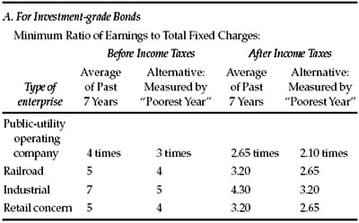
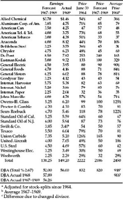
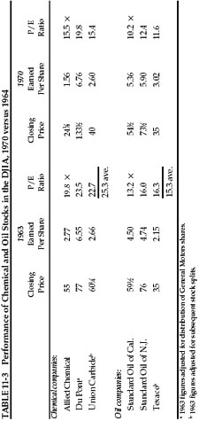
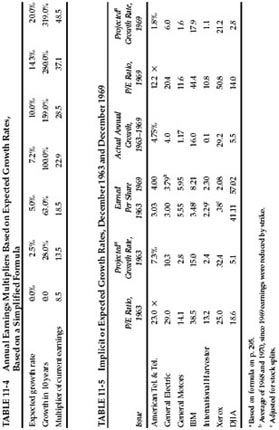

F inancial analysis is now a well-established and flourishing profession, or semiprofession. The various societies of analysts that make up the National Federation of Financial Analysts have over 13,000 members, most of whom make their living out of this branch of mental activity. Financial analysts have textbooks, a code of ethics, and a quarterly journal. * They also have their share of unresolved problems. In recent years there has been a tendency to replace the general concept of “security analysis” by that of “financial analysis.” The latter phrase has a broader implication and is better suited to describe the work of most senior analysts on Wall Street. It would be useful to think of security analysis as limiting itself pretty much to the examination and evaluation of stocks and bonds, whereas financial analysis would comprise that work, plus the determination of investment policy (portfolio selection), plus a substantial amount of general economic analysis. 1 In this chapter we shall use whatever designation is most applicable, with chief emphasis on the work of the security analyst proper.
The security analyst deals with the past, the present, and the future of any given security issue. He describes the business; he summarizes its operating results and financial position; he sets forth its strong and weak points, its possibilities and risks; he estimates its future earning power under various assumptions, or as a “best guess.” He makes elaborate comparisons of various companies, or of the same company at various times. Finally, he expresses an opinion as to the safety of the issue, if it is a bond or investment-grade preferred stock, or as to its attractiveness as a purchase, if it is a common stock.
In doing all these things the security analyst avails himself of a number of techniques, ranging from the elementary to the most abstruse. He may modify substantially the figures in the company’s annual statements, even though they bear the sacred imprimatur of the certified public accountant. He is on the lookout particularly for items in these reports that may mean a good deal more or less than they say.
The security analyst develops and applies standards of safety by which we can conclude whether a given bond or preferred stock may be termed sound enough to justify purchase for investment. These standards relate primarily to past average earnings, but they are concerned also with capital structure, working capital, asset values, and other matters.
In dealing with common stocks the security analyst until recently has only rarely applied standards of value as well defined as were his standards of safety for bonds and preferred stocks. Most of the time he contended himself with a summary of past performances, a more or less general forecast of the future—with particular emphasis on the next 12 months—and a rather arbitrary conclusion. The latter was, and still is, often drawn with one eye on the stock ticker or the market charts. In the past few years, however, much attention has been given by practicing analysts to the problem of valuing growth stocks. Many of these have sold at such high prices in relation to past and current earnings that those recommending them have felt a special obligation to justify their purchase by fairly definite projections of expected earnings running fairly far into the future. Certain mathematical techniques of a rather sophisticated sort have perforce been invoked to support the valuations arrived at.
We shall deal with these techniques, in foreshortened form, a little later. However, we must point out a troublesome paradox here, which is that the mathematical valuations have become most prevalent precisely in those areas where one might consider them least reliable. For the more dependent the valuation becomes on anticipations of the future—and the less it is tied to a figure demonstrated by past performance—the more vulnerable it becomes to possible miscalculation and serious error. A large part of the value found for a high-multiplier growth stock is derived from future projections which differ markedly from past performance—except perhaps in the growth rate itself. Thus it may be said that security analysts today find themselves compelled to become most mathematical and “scientific” in the very situations which lend themselves least auspiciously to exact treatment. *
Let us proceed, nonetheless, with our discussion of the more important elements and techniques of security analysis. The present highly condensed treatment is directed to the needs of the nonprofessional investor. At the minimum he should understand what the security analyst is talking about and driving at; beyond that, he should be equipped, if possible, to distinguish between superficial and sound analysis.
Security analysis for the lay investor is thought of as beginning with the interpretation of a company’s annual financial report. This is a subject which we have covered for laymen in a separate book, entitled The Interpretation of Financial Statements. 2 We do not consider it necessary or appropriate to traverse the same ground in this chapter, especially since the emphasis in the present book is on principles and attitudes rather than on information and description. Let us pass on to two basic questions underlying the selection of investments. What are the primary tests of safety of a corporate bond or preferred stock? What are the chief factors entering into the valuation of a common stock?
Bond Analysis
The most dependable and hence the most respectable branch of security analysis concerns itself with the safety, or quality, of bond issues and investment-grade preferred stocks. The chief criterion used for corporate bonds is the number of times that total interest charges have been covered by available earnings for some years in the past. In the case of preferred stocks, it is the number of times that bond interest and preferred dividends combined have been covered.
The exact standards applied will vary with different authorities. Since the tests are at bottom arbitrary, there is no way to determine precisely the most suitable criteria. In the 1961 revision of our textbook, Security Analysis, we recommend certain “coverage” standards, which appear in Table 11-1. *
Our basic test is applied only to the average results for a period of years. Other authorities require also that a minimum coverage be shown for every year considered. We approve a “poorest-year” test as an alternative to the seven-year-average test; it would be sufficient if the bond or preferred stock met either of these criteria.
TABLE 11-1 Recommended Minimum “Coverage” for Bonds and Preferred Stocks

B. For Investment-grade Preferred Stocks
The same minimum figures as above are required to be shown by the ratio of earnings before income taxes to the sum of fixed charges plus twice preferred dividends.
NOTE : The inclusion of twice the preferred dividends allows for the fact that preferred dividends are not income-tax deductible, whereas interest charges are so deductible.
C. Other Categories of Bonds and Preferreds
The standards given above are not applicable to (1) public-utility holding companies, (2) financial companies, (3) real-estate companies.
It may be objected that the large increase in bond interest rates since 1961 would justify some offsetting reduction in the coverage of charges required. Obviously it would be much harder for an industrial company to show a seven-times coverage of interest charges at 8% than at 4½%. To meet this changed situation we now suggest an alternative requirement related to the percent earned on the principal amount of the debt. These figures might be 33% before taxes for an industrial company, 20% for a public utility, and 25% for a railroad. It should be borne in mind here that the rate actually paid by most companies on their total debt is considerably less than the current 8% figures, since they have the benefit of older issues bearing lower coupons. The “poorest year” requirement could be set at about two-thirds of the seven-year requirement.
In addition to the earnings-coverage test, a number of others are generally applied. These include the following:
1. Size of Enterprise. There is a minimum standard in terms of volume of business for a corporation—varying as between industrials, utilities, and railroads—and of population for a municipality.
2. Stock/Equity Ratio. This is the ratio of the market price of the junior stock issues * to the total face amount of the debt, or the debt plus preferred stock. It is a rough measure of the protection, or “cushion,” afforded by the presence of a junior investment that must first bear the brunt of unfavorable developments. This factor includes the market’s appraisal of the future prospects of the enterprise.
3. Property Value. The asset values, as shown on the balance sheet or as appraised, were formerly considered the chief security and protection for a bond issue. Experience has shown that in most cases safety resides in the earning power, and if this is deficient the assets lose most of their reputed value. Asset values, however, retain importance as a separate test of ample security for bonds and preferred stocks in three enterprise groups: public utilities (because rates may depend largely on the property investment), real-estate concerns, and investment companies.
At this point the alert investor should ask, “How dependable are tests of safety that are measured by past and present performance, in view of the fact that payment of interest and principal depends upon what the future will bring forth?” The answer can be founded only on experience. Investment history shows that bonds and preferred stocks that have met stringent tests of safety, based on the past, have in the great majority of cases been able to face the vicissitudes of the future successfully. This has been strikingly demonstrated in the major field of railroad bonds—a field that has been marked by a calamitous frequency of bankruptcies and serious losses. In nearly every case the roads that got into trouble had long been overbonded, had shown an inadequate coverage of fixed charges in periods of average prosperity, and would thus have been ruled out by investors who applied strict tests of safety. Conversely, practically every road that has met such tests has escaped financial embarrassment. Our premise was strikingly vindicated by the financial history of the numerous railroads reorganized in the 1940s and in 1950. All of these, with one exception, started their careers with fixed charges reduced to a point where the current coverage of fixed-interest requirements was ample, or at least respectable. The exception was the New Haven Railroad, which in its reorganization year, 1947, earned its new charges only about 1.1 times. In consequence, while all the other roads were able to come through rather difficult times with solvency unimpaired, the New Haven relapsed into trusteeship (for the third time) in 1961.
In Chapter 17 below we shall consider some aspects of the bankruptcy of the Penn Central Railroad, which shook the financial community in 1970. An elementary fact in this case was that the coverage of fixed charges did not meet conservative standards as early as 1965; hence a prudent bond investor would have avoided or disposed of the bond issues of the system long before its financial collapse.
Our observations on the adequacy of the past record to judge future safety apply, and to an even greater degree, to the public utilities, which constitute a major area for bond investment. Receivership of a soundly capitalized (electric) utility company or system is almost impossible. Since Securities and Exchange Commission control was instituted, * along with the breakup of most of the holding-company systems, public-utility financing has been sound and bankruptcies unknown. The financial troubles of electric and gas utilities in the 1930s were traceable almost 100% to financial excesses and mismanagement, which left their imprint clearly on the companies’ capitalization structures. Simple but stringent tests of safety, therefore, would have warned the investor away from the issues that were later to default.
Among industrial bond issues the long-term record has been different. Although the industrial group as a whole has shown a better growth of earning power than either the railroads or the utilities, it has revealed a lesser degree of inherent stability for individual companies and lines of business. Thus in the past, at least, there have been persuasive reasons for confining the purchase of industrial bonds and preferred stocks to companies that not only are of major size but also have shown an ability in the past to withstand a serious depression.
Few defaults of industrial bonds have occurred since 1950, but this fact is attributable in part to the absence of a major depression during this long period. Since 1966 there have been adverse developments in the financial position of many industrial companies. Considerable difficulties have developed as the result of unwise expansion. On the one hand this has involved large additions to both bank loans and long-term debt; on the other it has frequently produced operating losses instead of the expected profits. At the beginning of 1971 it was calculated that in the past seven years the interest payments of all nonfinancial firms had grown from $9.8 billion in 1963 to $26.1 billion in 1970, and that interest payments had taken 29% of the aggregate profits before interest and taxes in 1971, against only 16% in 1963. 3 Obviously, the burden on many individual firms had increased much more than this. Overbonded companies have become all too familiar. There is every reason to repeat the caution expressed in our 1965 edition:
We are not quite ready to suggest that the investor may count on an indefinite continuance of this favorable situation, and hence relax his standards of bond selection in the industrial or any other group.
Common-Stock Analysis
The ideal form of common-stock analysis leads to a valuation of the issue which can be compared with the current price to determine whether or not the security is an attractive purchase. This valuation, in turn, would ordinarily be found by estimating the average earnings over a period of years in the future and then multiplying that estimate by an appropriate “capitalization factor.”
The now-standard procedure for estimating future earning power starts with average past data for physical volume, prices received, and operating margin. Future sales in dollars are then projected on the basis of assumptions as to the amount of change in volume and price level over the previous base. These estimates, in turn, are grounded first on general economic forecasts of gross national product, and then on special calculations applicable to the industry and company in question.
An illustration of this method of valuation may be taken from our 1965 edition and brought up to date by adding the sequel. The Value Line, a leading investment service, makes forecasts of future earnings and dividends by the procedure outlined above, and then derives a figure of “price potentiality” (or projected market value) by applying a valuation formula to each issue based largely on certain past relationships. In Table 11-2 we reproduce the projections for 1967–1969 made in June 1964, and compare them with the earnings, and average market price actually realized in 1968 (which approximates the 1967–1969 period).
The combined forecasts proved to be somewhat on the low side, but not seriously so. The corresponding predictions made six years before had turned out to be overoptimistic on earnings and dividends; but this had been offset by use of a low multiplier, with the result that the “price potentiality” figure proved to be about the same as the actual average price for 1963.
The reader will note that quite a number of the individual forecasts were wide of the mark. This is an instance in support of our general view that composite or group estimates are likely to be a good deal more dependable than those for individual companies. Ideally, perhaps, the security analyst should pick out the three or four companies whose future he thinks he knows the best, and concentrate his own and his clients’ interest on what he forecasts for them. Unfortunately, it appears to be almost impossible to distinguish in advance between those individual forecasts which can be relied upon and those which are subject to a large chance of error. At bottom, this is the reason for the wide diversification practiced by the investment funds. For it is undoubtedly better to concentrate on one stock that you know is going to prove highly profitable, rather than dilute your results to a mediocre figure, merely for diversification’s sake. But this is not done, because it cannot be done dependably. 4 The prevalence of wide diversification is in itself a pragmatic repudiation of the fetish of “selectivity,” to which Wall Street constantly pays lip service. *
TABLE 11-2 The Dow Jones Industrial Average
(The Value Line’s Forecast for 1967–1969 (Made in Mid-1964) Compared With Actual Results in 1968)

Factors Affecting the Capitalization Rate
Though average future earnings are supposed to be the chief determinant of value, the security analyst takes into account a number of other factors of a more or less definite nature. Most of these will enter into his capitalization rate, which can vary over a wide range, depending upon the “quality” of the stock issue. Thus, although two companies may have the same figure of expected earnings per share in 1973–1975—say $4—the analyst may value one as low as 40 and the other as high as 100. Let us deal briefly with some of the considerations that enter into these divergent multipliers.
1. General Long-Term Prospects. No one really knows anything about what will happen in the distant future, but analysts and investors have strong views on the subject just the same. These views are reflected in the substantial differentials between the price/earnings ratios of individual companies and of industry groups. At this point we added in our 1965 edition:
For example, at the end of 1963 the chemical companies in the DJIA were selling at considerably higher multipliers than the oil companies, indicating stronger confidence in the prospects of the former than of the latter. Such distinctions made by the market are often soundly based, but when dictated mainly by past performance they are as likely to be wrong as right.
We shall supply here, in Table 11-3, the 1963 year-end material on the chemical and oil company issues in the DJIA, and carry their earnings to the end of 1970. It will be seen that the chemical companies, despite their high multipliers, made practically no gain in earnings in the period after 1963. The oil companies did much better than the chemicals and about in line with the growth implied in their 1963 multipliers. 5 Thus our chemical-stock example proved to be one of the cases in which the market multipliers were proven wrong. *

2. Management. On Wall Street a great deal is constantly said on this subject, but little that is really helpful. Until objective, quantitative, and reasonably reliable tests of managerial competence are devised and applied, this factor will continue to be looked at through a fog. It is fair to assume that an outstandingly successful company has unusually good management. This will have shown itself already in the past record; it will show up again in the estimates for the next five years, and once more in the previously discussed factor of long-term prospects. The tendency to count it still another time as a separate bullish consideration can easily lead to expensive overvaluations. The management factor is most useful, we think, in those cases in which a recent change has taken place that has not yet had the time to show its significance in the actual figures.
Two spectacular occurrences of this kind were associated with the Chrysler Motor Corporation. The first took place as far back as 1921, when Walter Chrysler took command of the almost moribund Maxwell Motors, and in a few years made it a large and highly profitable enterprise, while numerous other automobile companies were forced out of business. The second happened as recently as 1962, when Chrysler had fallen far from its once high estate and the stock was selling at its lowest price in many years. Then new interests, associated with Consolidation Coal, took over the reins. The earnings advanced from the 1961 figure of $1.24 per share to the equivalent of $17 in 1963, and the price rose from a low of 38½ in 1962 to the equivalent of nearly 200 the very next year. 6
3. Financial Strength and Capital Structure. Stock of a company with a lot of surplus cash and nothing ahead of the common is clearly a better purchase (at the same price) than another one with the same per share earnings but large bank loans and senior securities. Such factors are properly and carefully taken into account by security analysts. A modest amount of bonds or preferred stock, however, is not necessarily a disadvantage to the common, nor is the moderate use of seasonal bank credit. (Incidentally, a top-heavy structure—too little common stock in relation to bonds and preferred—may under favorable conditions make for a huge speculative profit in the common. This is the factor known as “leverage.”)
4. Dividend Record. One of the most persuasive tests of high quality is an uninterrupted record of dividend payments going back over many years. We think that a record of continuous dividend payments for the last 20 years or more is an important plus factor in the company’s quality rating. Indeed the defensive investor might be justified in limiting his purchases to those meeting this test.
5. Current Dividend Rate. This, our last additional factor, is the most difficult one to deal with in satisfactory fashion. Fortunately, the majority of companies have come to follow what may be called a standard dividend policy. This has meant the distribution of about two-thirds of their average earnings, except that in the recent period of high profits and inflationary demands for more capital the figure has tended to be lower. (In 1969 it was 59.5% for the stocks in the Dow Jones average, and 55% for all American corporations.) * Where the dividend bears a normal relationship to the earnings, the valuation may be made on either basis without substantially affecting the result. For example, a typical secondary company with expected average earnings of $3 and an expected dividend of $2 may be valued at either 12 times its earnings or 18 times its dividend, to yield a value of 36 in both cases.
However, an increasing number of growth companies are departing from the once standard policy of paying out 60% or more of earnings in dividends, on the grounds that the shareholders’ interests will be better served by retaining nearly all the profits to finance expansion. The issue presents problems and requires careful distinctions. We have decided to defer our discussion of the vital question of proper dividend policy to a later section—Chapter 19—where we shall deal with it as a part of the general problem of management-shareholder relations.
Capitalization Rates for Growth Stocks
Most of the writing of security analysts on formal appraisals relates to the valuation of growth stocks. Our study of the various methods has led us to suggest a foreshortened and quite simple formula for the valuation of growth stocks, which is intended to produce figures fairly close to those resulting from the more refined mathematical calculations. Our formula is:
Value = Current (Normal) Earnings × (8.5 plus twice the expected annual growth rate)
The growth figure should be that expected over the next seven to ten years. 7
In Table 11-4 we show how our formula works out for various rates of assumed growth. It is easy to make the converse calculation and to determine what rate of growth is anticipated by the current market price, assuming our formula is valid. In our last edition we made that calculation for the DJIA and for six important stock issues. These figures are reproduced in Table 11-5. We commented at the time:
The difference between the implicit 32.4% annual growth rate for Xerox and the extremely modest 2.8% for General Motors is indeed striking. It is explainable in part by the stock market’s feeling that General Motors’ 1963 earnings—the largest for any corporation in history—can be maintained with difficulty and exceeded only modestly at best. The price earnings ratio of Xerox, on the other hand, is quite representative of speculative enthusiasm fastened upon a company of great achievement and perhaps still greater promise.
The implicit or expected growth rate of 5.1% for the DJIA compares with an actual annual increase of 3.4% (compounded) between 1951–1953 and 1961–1963.

We should have added a caution somewhat as follows: The valuations of expected high-growth stocks are necessarily on the low side, if we were to assume these growth rates will actually be realized. In fact, according to the arithmetic, if a company could be assumed to grow at a rate of 8% or more indefinitely in the future its value would be infinite, and no price would be too high to pay for the shares. What the valuer actually does in these cases is to introduce a margin of safety into his calculations—somewhat as an engineer does in his specifications for a structure. On this basis the purchases would realize his assigned objective (in 1963, a future overall return of 7½% per annum) even if the growth rate actually realized proved substantially less than that projected in the formula. Of course, then, if that rate were actually realized the investor would be sure to enjoy a handsome additional return. There is really no way of valuing a high-growth company (with an expected rate above, say, 8% annually), in which the analyst can make realistic assumptions of both the proper multiplier for the current earnings and the expectable multiplier for the future earnings.
As it happened the actual growth for Xerox and IBM proved very close to the high rates implied from our formula. As just explained, this fine showing inevitably produced a large advance in the price of both issues. The growth of the DJIA itself was also about as projected by the 1963 closing market price. But the moderate rate of 5% did not involve the mathematical dilemma of Xerox and IBM. It turned out that the 23% price rise to the end of 1970, plus the 28% in aggregate dividend return received, gave not far from the 7½% annual overall gain posited in our formula. In the case of the other four companies it may suffice to say that their growth did not equal the expectations implied in the 1963 price and that their quotations failed to rise as much as the DJIA. Warning: This material is supplied for illustrative purposes only, and because of the inescapable necessity in security analysis to project the future growth rate for most companies studied. Let the reader not be misled into thinking that such projections have any high degree of reliability or, conversely, that future prices can be counted on to behave accordingly as the prophecies are realized, surpassed, or disappointed.
We should point out that any “scientific,” or at least reasonably dependable, stock evaluation based on anticipated future results must take future interest rates into account. A given schedule of expected earnings, or dividends, would have a smaller present value if we assume a higher than if we assume a lower interest structure. * Such assumptions have always been difficult to make with any degree of confidence, and the recent violent swings in long-term interest rates render forecasts of this sort almost presumptuous. Hence we have retained our old formula above, simply because no new one would appear more plausible.
Industry Analysis
Because the general prospects of the enterprise carry major weight in the establishment of market prices, it is natural for the security analyst to devote a great deal of attention to the economic position of the industry and of the individual company in its industry. Studies of this kind can go into unlimited detail. They are sometimes productive of valuable insights into important factors that will be operative in the future and are insufficiently appreciated by the current market. Where a conclusion of that kind can be drawn with a fair degree of confidence, it affords a sound basis for investment decisions.
Our own observation, however, leads us to minimize somewhat the practical value of most of the industry studies that are made available to investors. The material developed is ordinarily of a kind with which the public is already fairly familiar and that has already exerted considerable influence on market quotations. Rarely does one find a brokerage-house study that points out, with a convincing array of facts, that a popular industry is heading for a fall or that an unpopular one is due to prosper. Wall Street’s view of the longer future is notoriously fallible, and this necessarily applies to that important part of its investigations which is directed toward the forecasting of the course of profits in various industries.
We must recognize, however, that the rapid and pervasive growth of technology in recent years is not without major effect on the attitude and the labors of the security analyst. More so than in the past, the progress or retrogression of the typical company in the coming decade may depend on its relation to new products and new processes, which the analyst may have a chance to study and evaluate in advance. Thus there is doubtless a promising area for effective work by the analyst, based on field trips, interviews with research men, and on intensive technological investigation on his own. There are hazards connected with investment conclusions derived chiefly from such glimpses into the future, and not supported by presently demonstrable value. Yet there are perhaps equal hazards in sticking closely to the limits of value set by sober calculations resting on actual results. The investor cannot have it both ways. He can be imaginative and play for the big profits that are the reward for vision proved sound by the event; but then he must run a substantial risk of major or minor miscalculation. Or he can be conservative, and refuse to pay more than a minor premium for possibilities as yet unproved; but in that case he must be prepared for the later contemplation of golden opportunities foregone.
A Two-Part Appraisal Process
Let us return for a moment to the idea of valuation or appraisal of a common stock, which we began to discuss above on p. 288. A great deal of reflection on the subject has led us to conclude that this better be done quite differently than is now the established practice. We suggest that analysts work out first what we call the “past-performance value,” which is based solely on the past record. This would indicate what the stock would be worth—absolutely, or as a percentage of the DJIA or of the S & P composite—if it is assumed that its relative past performance will continue unchanged in the future. (This includes the assumption that its relative growth rate, as shown in the last seven years, will also continue unchanged over the next seven years.) This process could be carried out mechanically by applying a formula that gives individual weights to past figures for profitability, stability, and growth, and also for current financial condition. The second part of the analysis should consider to what extent the value based solely on past performance should be modified because of new conditions expected in the future.
Such a procedure would divide the work between senior and junior analysts as follows: (1) The senior analyst would set up the formula to apply to all companies generally for determining past-performance value. (2) The junior analysts would work up such factors for the designated companies—pretty much in mechanical fashion. (3) The senior analyst would then determine to what extent a company’s performance—absolute or relative—is likely to differ from its past record, and what change should be made in the value to reflect such anticipated changes. It would be best if the senior analyst’s report showed both the original valuation and the modified one, with his reasons for the change.
Is a job of this kind worth doing? Our answer is in the affirmative, but our reasons may appear somewhat cynical to the reader. We doubt whether the valuations so reached will prove sufficiently dependable in the case of the typical industrial company, great or small. We shall illustrate the difficulties of this job in our discussion of Aluminum Company of America (ALCOA) in the next chapter. Nonetheless it should be done for such common stocks. Why? First, many security analysts are bound to make current or projected valuations, as part of their daily work. The method we propose should be an improvement on those generally followed today. Secondly, because it should give useful experience and insight to the analysts who practice this method. Thirdly, because work of this kind could produce an invaluable body of recorded experience—as has long been the case in medicine—that may lead to better methods of procedure and a useful knowledge of its possibilities and limitations. The public-utility stocks might well prove an important area in which this approach will show real pragmatic value. Eventually the intelligent analyst will confine himself to those groups in which the future appears reasonably predictable, * or where the margin of safety of past-performance value over current price is so large that he can take his chances on future variations—as he does in selecting well-secured senior securities.
In subsequent chapters we shall supply concrete examples of the application of analytical techniques. But they will only be illustrations. If the reader finds the subject interesting he should pursue it systematically and thoroughly before he considers himself qualified to pass a final buy-or-sell judgment of his own on a security issue.